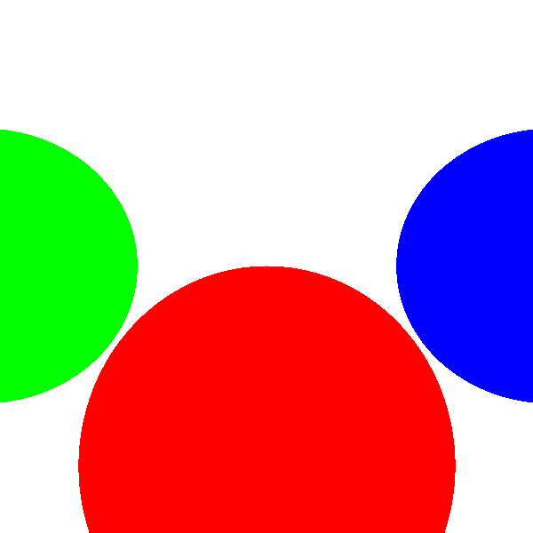

Parametre \( t \)'nin Anlamı
İşin izleme (ray tracing) algoritmasında, bir ışının gittiği yol matematiksel bir denklemle tanımlanır: \( P = O + tD \). Bu denklemde:
- \( P \): Işının geçtiği herhangi bir nokta
- \( O \): Işının başlangıç noktası, yani kamera
- \( D \): Işının yön vektörü
- \( t \): Parametre, ışının üzerindeki noktayı belirler
Parametre \( t \) farklı değerler aldığında ışının hangi noktada olduğunu belirler:
- \( t = 0 \): Kamera noktasıdır (\( O \)). Işın kameradan çıkış anında buradadır.
- \( t = 1 \): Viewport (görüntü düzlemi) üzerindeki bir noktadır (\( V \)). Işın bu düzleme ulaştığında buradadır.
- \( t < 0 \): Işın kameranın arkasındadır, bu yüzden ilgilenmeyiz.
- \( t > 1 \): Işın, viewport'un ötesindeki gerçek sahne nesnelerine ulaşır.
- \( 0 < t < 1 \): Işın, kamera ile viewport arasında bir yerlerdedir.

Bu nedenle, ışın izleme algoritmasında sadece viewport'un ötesindeki nesneleri görmek istediğimiz için \( t_{\text{min}} = 1 \) ve \( t_{\text{max}} = \infty \) seçiyoruz.
Tam Algoritma (Pseudocode)
İşin izleme algoritmamız aşağıdaki adımlarla çalışır:
Ana Döngü
- Her piksel \((x, y)\) için:
- CanvasToViewport(x, y) ile viewport üzerindeki noktayı bul
- TraceRay(O, D, 1, ∞) ile pikselin rengini bul
- PutPixel(x, y, renk) ile pikseli boya
TraceRay Fonksiyonu
- Her küre için IntersectRaySphere çağırılır
- En yakın kesişimi (en küçük \( t \)) bulur
- O kürenin rengini döndürür
- Kesişim yoksa arka plan rengini döndürür
IntersectRaySphere Fonksiyonu
- İkinci derece denklemi çözer
- \( t_1 \) ve \( t_2 \) değerlerini döndürür
Sahne Tanımlaması
Basit bir sahne tanımlayalım. Bu sahne, üç renkte küre ve bir zemin küresinden oluşur:
- Viewport: 1x1 boyutunda, mesafe \( d = 1 \)
- Kırmızı Küre: Merkez \((0, -1, 3)\), yarıçap 1
- Mavi Küre: Merkez \((2, 0, 4)\), yarıçap 1
- Yeşil Küre: Merkez \((-2, 0, 4)\), yarıçap 1
- Sarı Zemin: Merkez \((0, -5001, 0)\), yarıçap 5000

Sonuç
Bu algoritmayı çalıştırdığımızda, aşağıdaki gibi bir sonuç elde ederiz:

Küreler, daire gibi görünür. Neden mi? Çünkü ışık modeli yok - nesneler düz renkli. Işık, gölge ve yansıma ekleyince daha gerçekçi görünecek. Bunlar sonraki bölümlerde işlenecek.
Raylib ile Tam Raytracer
#include "raylib.h"
#include <math.h>
#include <float.h>
/*
* Ornek 04 - Basit Yazilimsal Isin Izleyici (Software Raytracer)
*
* "Computer Graphics from Scratch" kitabindaki temel isin izleme
* algoritmasini raylib ile gercekler.
*
* Algoritma:
* 1. Her piksel icin viewport uzerindeki noktayi hesapla
* 2. Kameradan o noktaya bir isin gonder
* 3. Isinin sahnedeki kurelerle kesisimini kontrol et
* 4. En yakin kesisim noktasindaki kurenin rengini piksel olarak ciz
*/
// ---- Vektor Yapisi ----
typedef struct { float x, y, z; } Vec3;
Vec3 vec3_sub(Vec3 a, Vec3 b) {
return (Vec3){ a.x - b.x, a.y - b.y, a.z - b.z };
}
Vec3 vec3_add(Vec3 a, Vec3 b) {
return (Vec3){ a.x + b.x, a.y + b.y, a.z + b.z };
}
Vec3 vec3_scale(Vec3 v, float s) {
return (Vec3){ v.x * s, v.y * s, v.z * s };
}
float vec3_dot(Vec3 a, Vec3 b) {
return a.x * b.x + a.y * b.y + a.z * b.z;
}
float vec3_length(Vec3 v) {
return sqrtf(vec3_dot(v, v));
}
// ---- Kure Yapisi ----
typedef struct {
Vec3 center;
float radius;
Color color;
} Sphere;
// ---- Sahne Tanimlamasi ----
#define SPHERE_COUNT 4
Sphere scene[SPHERE_COUNT] = {
{ { 0.0f, -1.0f, 3.0f }, 1.0f, { 255, 0, 0, 255 } }, // Kirmizi
{ { 2.0f, 0.0f, 4.0f }, 1.0f, { 0, 0, 255, 255 } }, // Mavi
{ {-2.0f, 0.0f, 4.0f }, 1.0f, { 0, 255, 0, 255 } }, // Yesil
{ { 0.0f, -5001.0f, 0.0f }, 5000.0f, { 255, 255, 0, 255 } }, // Sari zemin
};
// ---- Isin-Kure Kesisimi ----
void IntersectRaySphere(Vec3 O, Vec3 D, Sphere s, float *t1, float *t2)
{
Vec3 CO = vec3_sub(O, s.center);
float a = vec3_dot(D, D);
float b = 2.0f * vec3_dot(CO, D);
float c = vec3_dot(CO, CO) - s.radius * s.radius;
float discriminant = b * b - 4.0f * a * c;
if (discriminant < 0.0f) {
*t1 = FLT_MAX;
*t2 = FLT_MAX;
return;
}
float sqrt_disc = sqrtf(discriminant);
*t1 = (-b + sqrt_disc) / (2.0f * a);
*t2 = (-b - sqrt_disc) / (2.0f * a);
}
// ---- Isin Izleme ----
Color TraceRay(Vec3 O, Vec3 D, float t_min, float t_max)
{
float closest_t = FLT_MAX;
int closest_idx = -1;
for (int i = 0; i < SPHERE_COUNT; i++) {
float t1, t2;
IntersectRaySphere(O, D, scene[i], &t1, &t2);
if (t1 >= t_min && t1 <= t_max && t1 < closest_t) {
closest_t = t1;
closest_idx = i;
}
if (t2 >= t_min && t2 <= t_max && t2 < closest_t) {
closest_t = t2;
closest_idx = i;
}
}
if (closest_idx == -1) return RAYWHITE;
return scene[closest_idx].color;
}
// ---- Canvas -> Viewport Donusumu ----
Vec3 CanvasToViewport(int cx, int cy, int cw, int ch)
{
return (Vec3){
(float)cx / (float)cw, // Vw = 1
(float)cy / (float)ch, // Vh = 1
1.0f // d = 1
};
}
int main(void)
{
const int CW = 600;
const int CH = 600;
InitWindow(CW, CH, "Ornek 04 - Yazilimsal Isin Izleyici (Raytracer)");
// Render hedefi
Image img = GenImageColor(CW, CH, RAYWHITE);
Vec3 O = { 0.0f, 0.0f, 0.0f };
// ---- ANA ISIN IZLEME DONGUSU ----
for (int x = -CW / 2; x < CW / 2; x++) {
for (int y = -CH / 2; y < CH / 2; y++) {
Vec3 D = CanvasToViewport(x, y, CW, CH);
Color color = TraceRay(O, D, 1.0f, FLT_MAX);
int sx = x + CW / 2;
int sy = CH / 2 - y;
if (sx >= 0 && sx < CW && sy >= 0 && sy < CH) {
ImageDrawPixel(&img, sx, sy, color);
}
}
}
Texture2D texture = LoadTextureFromImage(img);
UnloadImage(img);
SetTargetFPS(60);
while (!WindowShouldClose())
{
BeginDrawing();
ClearBackground(RAYWHITE);
DrawTexture(texture, 0, 0, WHITE);
DrawRectangle(0, 0, CW, 55, Fade(BLACK, 0.6f));
DrawText("Yazilimsal Isin Izleyici", 10, 8, 22, WHITE);
DrawText("4 kure: Kirmizi(0,-1,3) Mavi(2,0,4) Yesil(-2,0,4) Sari(zemin)",
10, 33, 14, LIGHTGRAY);
EndDrawing();
}
UnloadTexture(texture);
CloseWindow();
return 0;
}
Bu Kod Ne Yapiyor?
Kod parçası, bir ışın izleme (ray tracing) algoritması gerçekleştirir. Şimdi adım adım inceleyelim:
Vektor Yapısı
typedef struct { float x, y, z; } Vec3;
Vec3 yapısı, üç boyutlu bir vektörü temsil eder ve x, y, z bileşenlerine sahiptir.
Vec3 İşlemleri
- vec3_sub: İki vektörün farkını hesaplar.
- vec3_add: İki vektörü toplar.
- vec3_scale: Bir vektörü bir skaler ile çarpar.
- vec3_dot: İki vektörün skaler çarpımını hesaplar.
- vec3_length: Bir vektörün uzunluğunu hesaplar.
Küre Yapısı
typedef struct { Vec3 center; float radius; Color color; } Sphere;
Sphere yapısı, bir küreyi temsil eder ve merkezi, yarıçapı ve rengi bilgilerini içerir.
Sahne Tanımlaması
Sahne, dört küreden oluşur: üç renkli küre ve bir zemin küresi. Her biri farklı konum ve renge sahiptir.
Işın-Küre Kesişimi
void IntersectRaySphere(Vec3 O, Vec3 D, Sphere s, float *t1, float *t2)
Bu fonksiyon, bir ışının bir küre ile kesişim noktalarını bulur. İkinci derece denklemin diskriminantını hesaplar ve iki kesişim noktasını döndürür.
Işın İzleme
Color TraceRay(Vec3 O, Vec3 D, float t_min, float t_max)
Bu fonksiyon, en yakın kesişimi bulur ve o kürenin rengini döndürür. Kesişim yoksa, arka plan rengini döndürür.
Canvas -> Viewport Dönüşümü
Vec3 CanvasToViewport(int cx, int cy, int cw, int ch)
Bu fonksiyon, bir piksel koordinatını viewport üzerindeki bir noktaya dönüştürür.
Ana Döngü
int main(void)
Ana fonksiyon, her piksel için ışın izleme işlemini gerçekleştirir ve sonuçları bir görüntüye yazar. Her piksel için ışın yönü hesaplanır ve TraceRay fonksiyonu çağrılır. Sonuç olarak elde edilen renk, görüntüye çizilir.
Özet ve Sıradaki Adımlar
Bu bölümde, ışın izleme algoritmasının temel prensiplerini öğrendik: kamera, viewport, ışın denklemi, küre denklemi, kesişim ve algoritmanın nasıl çalıştığını gördük. Kürelerin neden düz renkli göründüğünü (ışık modeli eksikliği) anladık.
Sonraki bölümde, ışık modelini inceleyeceğiz: diffuse, specular ve ambient bileşenleri ekleyerek daha gerçekçi görüntüler elde edeceğiz.